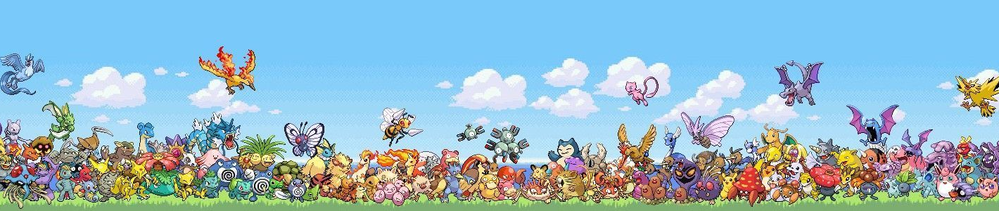
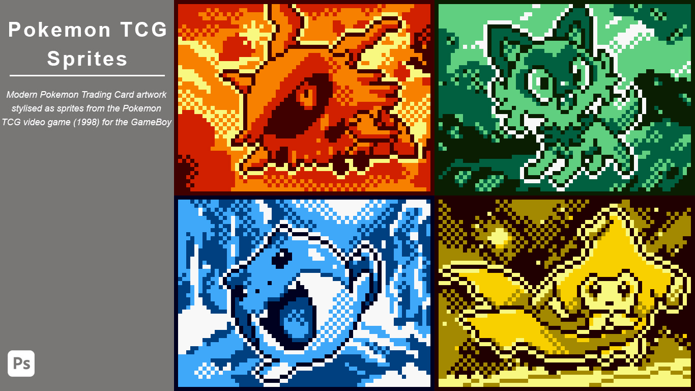
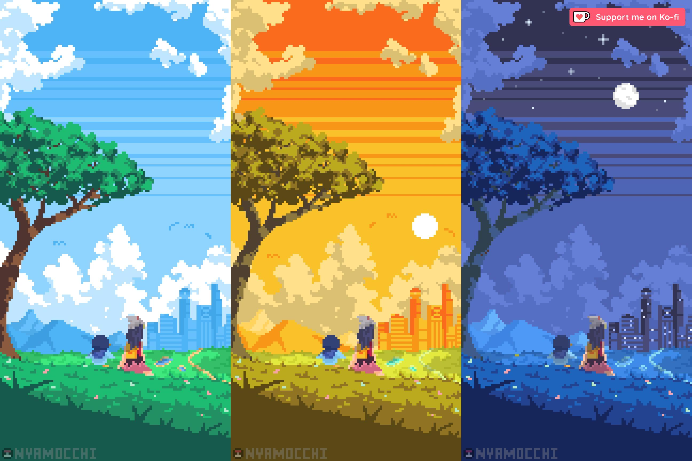
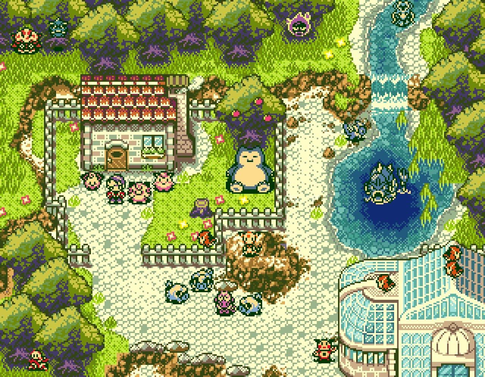

Pokémon (short for "Pocket Monsters") is a globally popular Japanese media franchise featuring creatures with special powers, created in 1996 by Satoshi Tajiri. It centers on humans capturing, training, and battling these creatures in video games, trading cards, and animated series. The franchise is built on themes of friendship, exploration, and strategy. The Concept of Pokémon are fictional creatures, inspired by real animals and insects, possessing elemental types (fire, water, electric, etc.). Trainers (often children) explore, capture Pokémon, and aim to become champions by winning battles, often against Gym Leaders.
In April 1998, Pokémon Center Co., Ltd. is established by the original authors of Pokémon: Nintendo Co., Ltd., Creatures Inc. and GAME FREAK inc. The company name was changed to The Pokémon Company in October 2000. Since then, our business activities have expanded to overall management of the Pokémon brand.
Trading Card Game (TCG) a strategic card game where players use decks to battle.

Anime/Films an animated series following Ash Ketchum, who started with Pikachu.

Video Games role-playing games (RPGs) focusing on collecting and turn-based battle.

It combines cute, memorable creature designs with a simple yet deep "rock-paper-scissors" style battle system, creating a shared global experience for all ages.
In the beginning, there was nothing. No stars. No time. No space. Only a silent, endless void formless and unmoving, stretching beyond comprehension. It was neither dark nor light, for such things did not yet exist. Then, without warning, an egg appeared. It hovered alone in the emptiness, radiating a faint, growing pulse. And from that egg, existence itself was born. Arceus. A being beyond form, beyond understanding its presence alone shattered the stillness. With its awakening came the first light, flooding the void with energy and purpose. Where there had been nothing, there was now potential. From its own essence, Arceus shaped three beings its first creations, its children: Dialga. Palkia. Giratina. Each carried a fragment of reality itself. Dialga roared and time began. A flowing current, unstoppable and eternal. Palkia stretched its form and space unfolded. The void expanded, giving rise to stars, galaxies, and worlds. Giratina opened its burning eyes and antimatter emerged. A hidden force, balancing all that existed, ensuring that creation would not consume itself. Thus, the Universe was born. But creation came at a cost. Each of the three saw their domain as supreme. Time sought to dominate all. Space bent and warped under its own expansion. Antimatter clawed at reality, threatening to unravel it entirely. Conflict erupted. Time fractured. Space twisted. Shadows spread. The Universe trembled on the edge of collapse. And so, Arceus acted. With a force that silenced existence itself, it ended the war banishing each of its children into separate realms and sealing much of their power within three sacred orbs. Balance was restored. For now.
With the cosmos stabilized, Arceus turned its gaze to a single world—a quiet planet formed within Palkia’s vast creation. There, it began anew. This time, it created not rulers of reality, but shapers of life: Groudon. Kyogre. Rayquaza. Groudon rose first, dragging continents from the planet molten core. Mountains split the sky, and land claimed its place. Kyogre followed, summoning endless oceans that flooded the world, bringing motion, depth, and the promise of life. And above them both, Rayquaza descended—filling the heavens with air, binding sky to sea and land. Yet even this world was not free from conflict. Land and sea clashed endlessly. Continents rose and sank. Oceans surged and retreated. But Rayquaza stood between them—silent, watchful, and unyielding. Not a ruler. Not a conqueror. A guardian of balance. Through its presence, harmony—fragile though it was—endured. And so the planet was named: Earth. As ages passed, the chaos softened. Groudon slept beneath the crust. Kyogre drifted into the abyssal depths. Rayquaza remained above, ever watchful. The world was ready. And Arceus vision was far from complete.
From the quiet Earth, Arceus created something entirely new. Not gods. Not forces. But life. First came the smallest forms tiny, unseen, yet unstoppable. They spread across oceans and land, adapting, evolving, changing. Then came greater beings. Creatures of water, land, and sky. Some fierce. Some gentle. Some wise. To guide this growing world, Arceus created new guardians: Beings of knowledge, emotion, and will, spirits tied to nature itself, watchers of balance, hidden among the living Time flowed. Space expanded. Balance held. But deep beyond reality…Something stirred. In the silent realm where Giratina had been cast, a distortion began to grow. Not chaos. Not destruction. But something far more dangerous A desire to return.